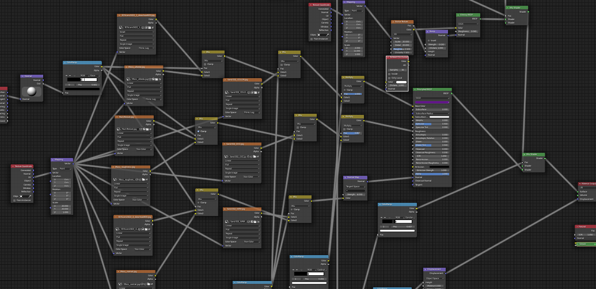
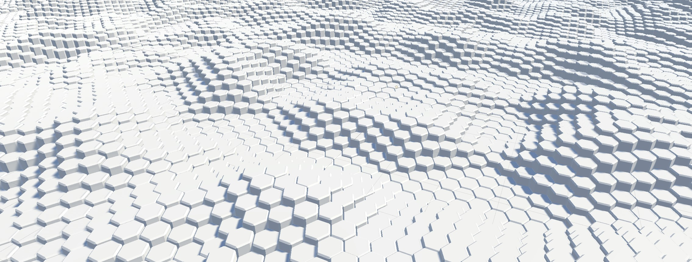

Map generation
Shaders and hexagons

Shaders and hexagons
To get a little more familiar with the Shader Editor in Blender, I created a procedural map generator as a minor project.
I found the results to be rather stunning, although the complexity intensified, and I lost hours in the tiniest of details.

HexagonalLandscape is a Unity project that generates a procedurally generated hexagonal terrain. It uses Perlin noise to create a heightmap for each hexagon, resulting in a dynamic and realistic-looking landscape. The script is designed to work with hexagons of variable size, and allows for customization of various parameters such as noise scale, minimum and maximum heights, and generation radius. It also includes a player tracking feature that generates terrain around the player's position.
This project includes a sample scene that demonstrates the generator in action. Additionally, it includes a TileManager script that keeps track of the generated hexagons for efficient memory management. Available on GitHub.